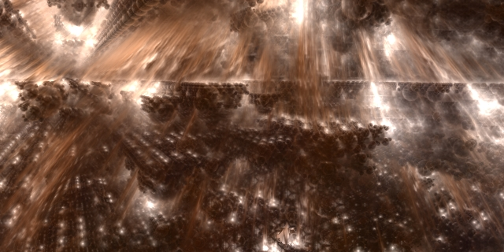

20070819 - High Dynamic Range

Made some key updates to the compositing engine. Switched from 8bit/channel to 16bit/channel and added mipmap support to the fractal framebuffer. So now the engine has high dynamic range. This extra precision really helps when compositing a foggy shadow over a lit area. Now the really bright areas show through the fog. Also the color around overexposed areas stays true instead of graying the hues do to clipping to white and loosing the color of the overexposed areas.
Of course I've just doubled my ROP bus bandwidth requirement (blending pixels into the framebuffer). My primary compositing fragment shader also does two texture lookups, one of which now is 16bit/channel instead of 8bit. To offset the performance impact of this change I have switched from trilinear to bilinear nearest mipmap for the 8bit texture lookup, and moved from 8bit linear to 16bit bilinear nearest mipmap for the other. Using mipmaping greatly increases the texture cache performance.